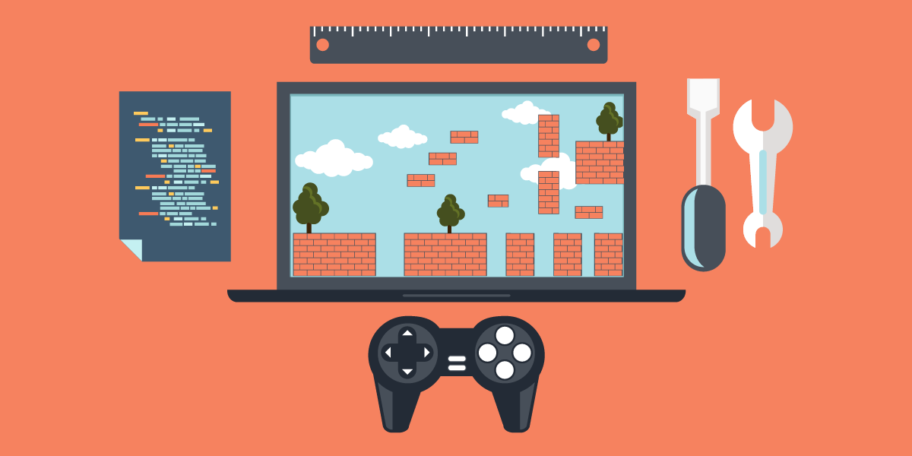

I am an aspiring computer scientist with experience working on projects in web development, game development and other areas of computing.
I am well organised, independent and a good problem solver with strong attention to detail.
I also create artwork as a hobby in my free time.
If you have any questions, please get in touch.

Education & Interests
I studied computer science throughout GCSE and A-Level before obtaining my Computer Science BSc degree from Goldsmiths, University of London.
I have also developed additional computing skills through independent learning and personal projects.
My main areas of interest are artificial intelligence and programming.
Key Skills
